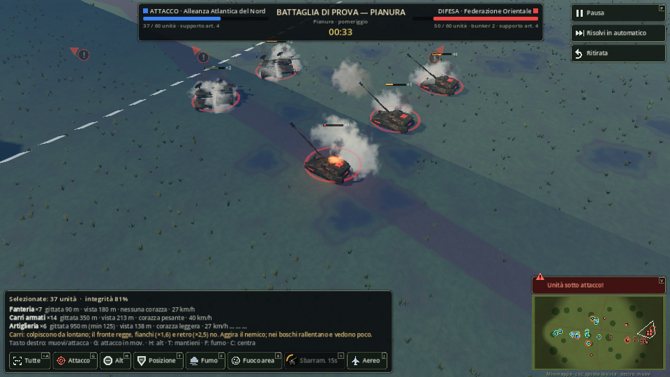
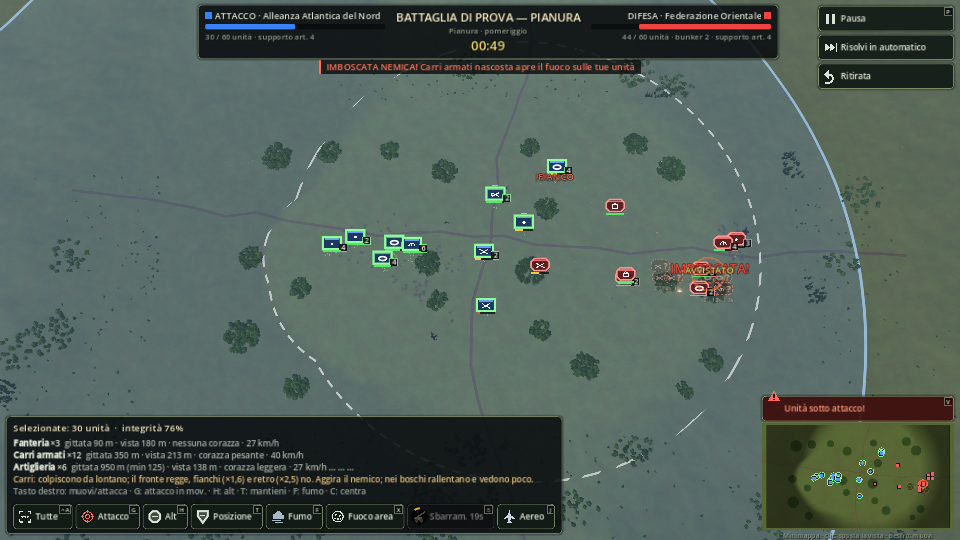
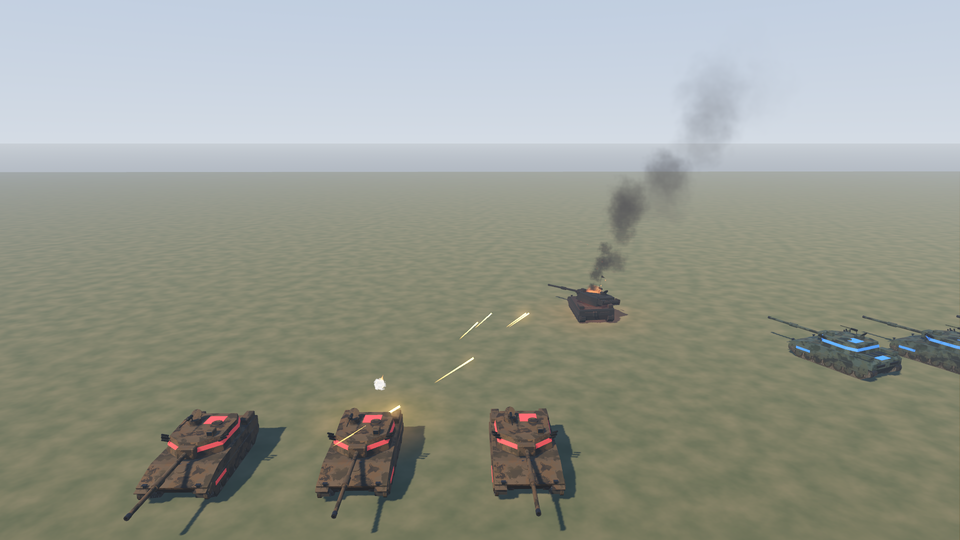
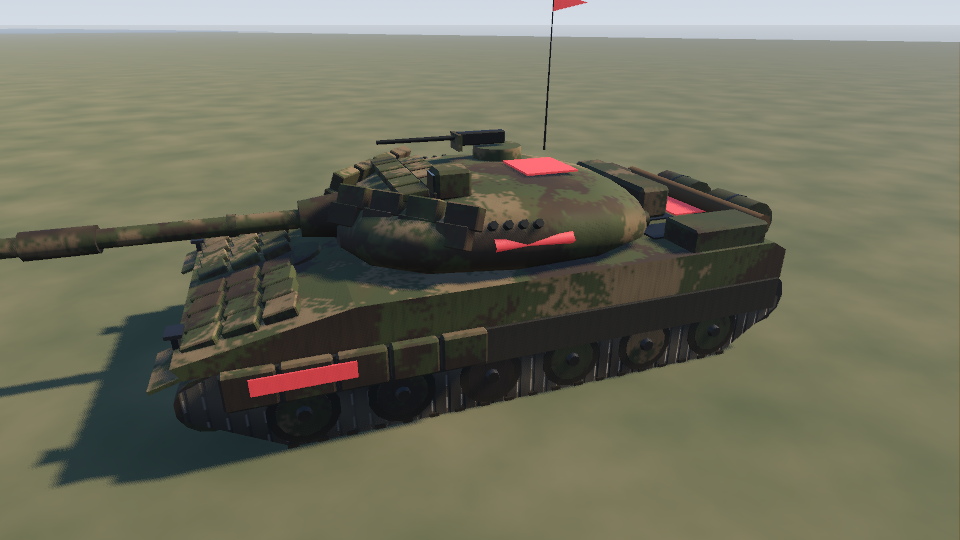
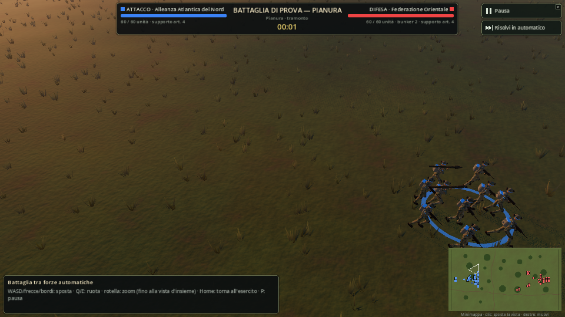
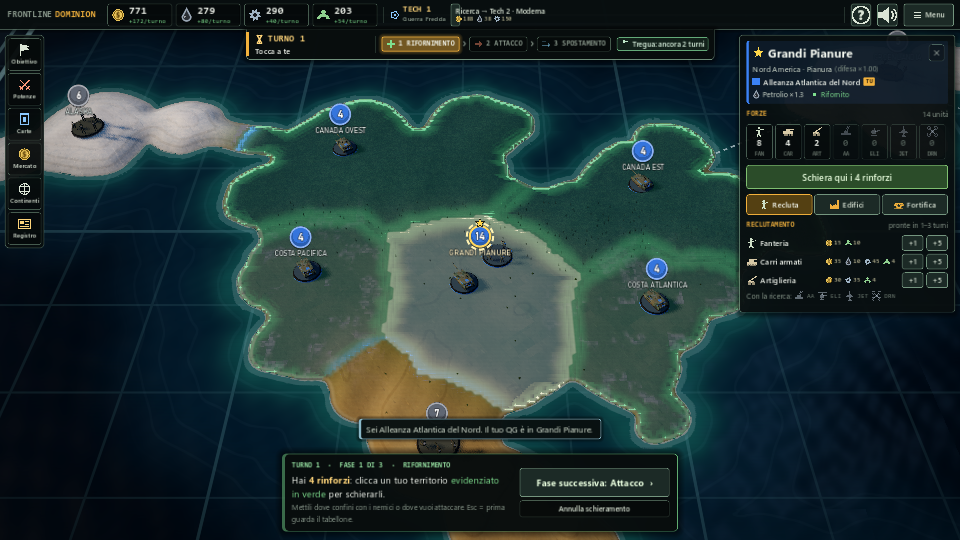

Dietro una collina i carri sono invisibili al nemico (e viceversa): puoi avvicinarti coperto e sbucare sul fianco. Chi sta in alto vede più lontano: vale la pena mandare un esploratore sulla cresta. Funziona anche nella risoluzione automatica.

Da lontano si leggono subito boschi, paesi, fiumi, ponti, creste e strade, con le pedine sopra. Oggi è un prato uniforme con macchie scure.
I mezzi lasciano solchi e alzano polvere (fango con la pioggia, neve sollevata nell'artico). I crateri restano per tutta la battaglia. I relitti bruciano e fumano a lungo.
Gli edifici si sgretolano a stadi sotto il fuoco (crepe, buchi, crollo) e le macerie restano come copertura per la fanteria. I carri abbattono alberi e recinzioni passando; le esplosioni spezzano i tronchi.
Il meteo non è solo estetica: pioggia e nebbia riducono la vista (esploratori e imboscate contano di più), la neve rallenta, di notte si vede solo ciò che i razzi illuminanti e gli incendi rischiarano. Può cambiare a metà scontro.

Esplosioni più grandi e luminose che illuminano il terreno intorno; fumo denso che sale e si piega col vento; vampe di sparo che rischiarano i mezzi; colori e ombre più cinematografici (tramonto caldo, cielo coperto freddo).

Il mezzo mostra quanto è malridotto: segni dei colpi, cingolo rotto (si ferma o rallenta), fumo nero dal motore, incendio, e alla fine l'esplosione con la torretta che salta e il relitto annerito che resta sul campo.

Proporzioni migliori, ruoli riconoscibili nella squadra (fuciliere, mitragliere col bipiede, anticarro, radiofonista), zaini e radio. Le animazioni nuove restano e vengono rifinite.
L'artiglieria si piazza davvero (puntoni a terra, canna che si alza) e rincula. La contraerea segue i bersagli col suo cannone. Elicotteri e jet con missili visibili, scie e ombre sul terreno. Navi con scia, onde e torrette che girano.
Ogni arma ha il suo aspetto: il colpo del carro con vampa e anello di fumo, la mitragliatrice con traccianti e bossoli, il razzo con la scia, l'artiglieria con la polvere all'impatto. Così capisci chi spara a chi anche dall'alto.

Una riga di ruolo per ogni unità; se non è disponibile, il motivo esatto («Serve una Fabbrica qui», «Serve Tech 2»). Più un passo del tutorial e una sezione della guida F1: rinforzi gratis per difendere, carri e artiglieria per attaccare.